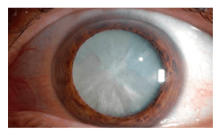
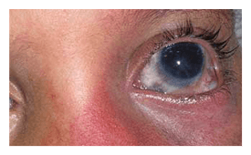
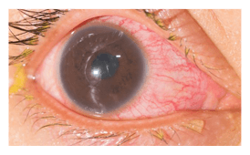
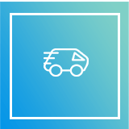

A látás romlása VAKSÁGHOZ VEZEHTET és komoly szövődményekkel járhat!
-

SZÜRKEHÁLYOG
A szemlencse elhomályosulása, amely különböző látásproblémákat vagy a látás teljes elvesztését eredményezheti
-

Zöldhályog
A glaukóma a látóideg rostjainak fokozatos pusztulásával járó betegség, amely vakságot okozhat és csak műtéttel elkerülhető
-

Retinaleválás
A retina szövetének elválása az alatta elhelyezkedő és azt tápláló szövetrészektől az esetek 80%-ában vakságot okoz
AZ OPTIVISION AKKOR IS SEGÍT, AMIKOR MINDEN MÁS ESZKÖZ HATÁSTALANNAK BIZONYUL
A látáskárosodás ma már nem csak egy adott személy, de az egész társadalom számára veszélyforrást jelent. A homályos látás növeli a közúti balesetek kialakulásának kockázatát. A látássérültek nagyobb veszélynek vannak kitéve az élet összetett és komolyabb odafigyelést igénylő területein, mint az élesebb látással rendelkező társaik. Az OptiVision regeneráló koncentrátum kifejezetten látásjavítás céljából lett kifejlesztve. A készítmény nem csak az éles látás visszanyerését teszi lehetővé, de emellett biztosítja a különféle szembetegségek megelőzését is. Az OptiVision a látáskárosodás fő okára fejti ki hatását. Aktív természetes összetevőinek köszönhetően megszünteti a szembetegség tüneteit, és védelmet nyújt a veszélyes szövődmények kialakulása ellen.
BÁRMILYEN ITALHOZ HOZZÁADHATÓ!
Az OptiVision előnyei
-
Részt vesz a retina helyreállításában és normalizálja a hajszálerek működését
-
Védelmet nyújt túlterhelés ellen és természetes módon hidratálja a szemet
-
Erősíti a szemizmokat, hozzájárulva ezzel a rövidlátás megelőzéséhez
OptiVision
Hatékonyság és növényi eredetű összetevők
-
Kurkumagyökér-kivonat
Javítja a látás élességet, valamint táplálja és erősíti a retinát.
-
Körömvirág-kivonat
Enyhíti a gyulladást, megszünteti az árpát, a kelést, a szem helmintiozist, a demodikózist, a szárazságot és az irritációt.
-
B2-vitamin (riboflavin)
Növeli a mikrocirkulációt, normalizálja az intraokuláris nyomást.".
Az OptiVision működési elve
Belsőleg alkalmazandó csepp
- Alkalmazás modja: felnőtteknek 25 csepp, 200 ml vízben
feloldva 1 hónapig. Ezt a kurzust szükség szerint meg lehet ismételni.
A maximális eredmény elérése érdekében az OptiVision-t ajánlott azonos időközönként (a nap 24 óráját figyelembe véve) alkalmazni
ÍME AZOK VISSZAJELZÉSEI, AKIK VISSZANYERTÉK LÁTÁSUKAT!
-
”fokozatosan visszatért a látásom, sőt, azóta jobb lett!...”
A szülés után kezdődtek a problémák. Lehet, hogy a magas vérnyomás miatt romlott sokat a látásom. Azt mondták, hogy az előfordul és majd elmúlik. Csakhogy egy évvel később még rosszabb lett. Gyakran fájt a szemem, folyton szárazságot éreztem. Ezért a mínusz 1,5 dioptria 3-asra csökkent!!! A kórházban továbbra is azt mondták, hogy elmúlik, de hogyan, ha egyszer ilyen mértékben romlik??? Elmentem szemészetre. Az orvos az OptiVisiont ajánlotta. Egy hónap sem kellett hozzá és fokozatosan visszatért a látásom, sőt, azóta jobb is lett! Most majdnem 100%-os a látásom. A vérnyomásról, szemszárazságról, fájdalomról már nem is beszélek, azok már rég elmúltak!
Mária, Budapest
-
”a csepp használata után a probléma megszűnt!...”
Megrendeltem az oldalon az OptiVisiont, mert már nagyon régóta be volt gyulladva a szemem. Gyakran volt árpa és kötőhártya-gyulladásom. Az orvosok nem segítettek, sokféle antibiotikumot szedtem,és egyikük se használt. Ez az egyetlen olyan koncentrátum, ami hosszú távon használt. A csepp használata után a probléma megszűnt, fél éve nem szenvedek többé semmitől! Jó, hogy bele lehet tenni az italba. A lényeg, hogy természetes alapú, semmi mesterséges nincs benne. Amikor legutóbb voltam a szemésznél, már sokkal jobbak voltak az eredmények.
Enikő, Szeged
-
”jobban érzem magam...”
Ahogy teltek az évek, úgy romlott a látásom. A távollátás nem egy kellemes dolog. Bizony nem kevés nehézséget okoz. Ezenkívül felmerült a szürkehályog veszélye is. Nagyon félek a műtéttől, mert hallottam olyan esetekről, amikor súlyos szövődmények alakultak ki. Amióta megvettem az Optivisiont, jobban érzem magam. Egy hónappal később az orvos megnyugtatott, hogy nem kell többé szürkehályogtól tartanom. Továbbra is használom, nagyon jó készítmény
László, Mátészalka
Az OptiVision-nal színesebbé válik a világ!
-
MEGRENDELÉS
Adja le rendelését weboldalunkon, töltse ki a megrendelőlapot
-
MEGRENDELŐLAP KITÖLTÉSE
Szakemberünk visszahívja önt és felveszi a rendelést
-

ÁTVÉTEL
A termék tetszőleges módon átvehető
-
FIZETÉS
Csak átvételkor kell kifizetnie a terméket